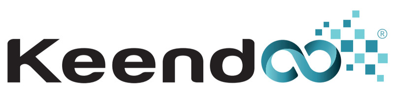
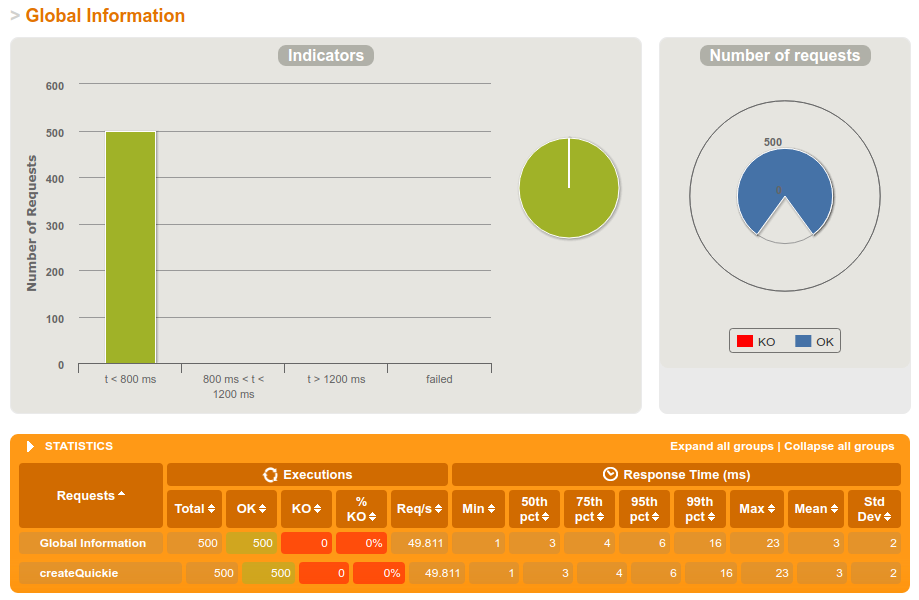

QuickieService quickieService =
new QuickieService(quickieConfiguration, datastore);
environment.jersey().register(new QuickieResource(quickieService));DropWizard, for the rest of us
Who am I
Adrien Pessu

Introduction
DropWizard : RESTful web services, ops-friendly, high-performance
DropWizard Core
Jetty
Jersey
QuickieApplication.java
Jersey
@Path("/quickies")
@Produces(MediaType.APPLICATION_JSON)
public class QuickieResource {
@GET
public Response getQuickies() {
return this.quickieService.getQuickies()
.map(quickies -> Response.status(Response.Status.OK)
.entity(quickies).build())
.orElse(Response.status(Response.Status.BAD_REQUEST)
.build());
}QuickieResource.java
Jackson
@JsonCreator
public Quickie(@JsonProperty("id") final ObjectId id,
@JsonProperty("name") final String name,
@JsonProperty("duration") final long duration) {
this.id = id;
this.name = name;
this.duration = duration;
}Quickie.java
{
"name": "DropWizard, for the rest of us",
"duration": 15
}Hibernate Validator
@POST
public Response createQuickies(@Valid Quickie quickie) {public class Quickie {
@NotEmpty
private final String name;
@Max(15)
@Min(5)
private long duration;Quickie.java
Logback
logging:
level: INFO
appenders:
- type: console
threshold: DEBUG
target: stderrJDBI / Hibernate
Liquid base
changeSet:
id: dropColumn-example
author: liquibase-docs
changes:
- dropColumn:
catalogName: cat
columnName: id
schemaName: public
tableName: personGuava
Ops friendly
Health Check
http://localhost:9010/healthcheck?pretty=trueHealth Check
{
"deadlocks": {
"healthy": true
}
}Metrics
http://localhost:9010/metrics?pretty=trueMetrics
"jvm.memory.heap.committed": {
"value": 3567255552
},
"jvm.memory.heap.init": {
"value": 262144000
},
"jvm.memory.heap.max": {
"value": 3719299072
},
"jvm.memory.heap.usage": {
"value": 0.6495514926958796
},
"jvm.memory.heap.used": {
"value": 2415876264
}Performance

DropWizard plugins
dropwizard-swagger
dropwizard-auth-jwt
dropwizard-graphql
dropwizard-consul
dropwizard-circuitbreaker
Démo
Merci
Ressources :
www.dropwizard.com
Microservices for Java Developers, Christian Posta, O’Reilly Media, Inc.